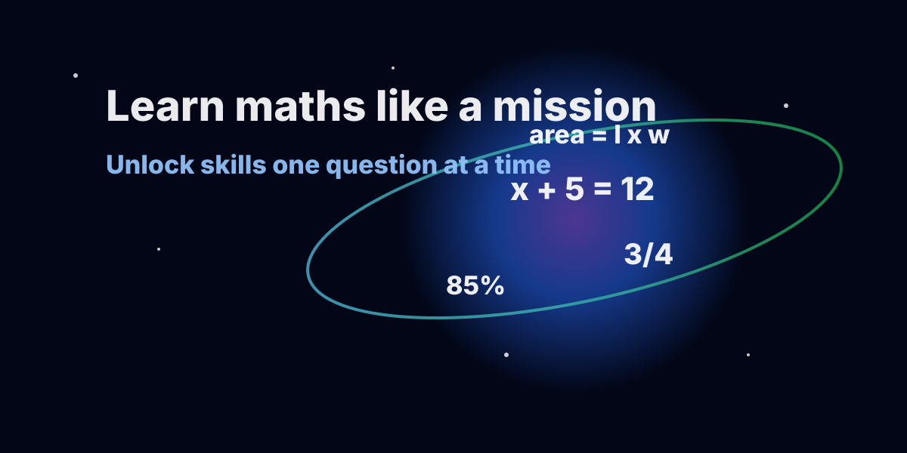

Maths that opens one skill at a time
This version is built like a learning game. Students cannot just open everything at once. They complete a lesson, answer 10 quiz questions one page at a time, then unlock the next mission.

For students
Clear explanations, method ladders, worked examples, and quiz pages that unlock step by step.
For parents
Printable worksheets, answer keys, and guidance for helping without simply giving answers.
For teachers
Create a local teacher account, turn on Teacher Mode, unlock every mission, open every quiz page, and reach worksheets quickly.
Unlock map
Complete the 10-question unlock quiz to finish each mission. Progress saves in this browser.
0% complete

Start Here
Learn how to use the course, track progress, and study in the right order.
Quiz: 10 questions. Next question unlocks after a correct answer.

Numbers and Place Value
Read, order, compare, and round whole numbers and negative numbers.
Quiz: 10 questions. Next question unlocks after a correct answer.

Addition and Subtraction
Add, subtract, estimate, and check answers accurately.
Quiz: 10 questions. Next question unlocks after a correct answer.

Multiplication and Division
Use times tables, factors, multiples, arrays, and division facts.
Quiz: 10 questions. Next question unlocks after a correct answer.

Fractions
Understand, simplify, compare, add, and subtract fractions.
Quiz: 10 questions. Next question unlocks after a correct answer.

Decimals
Compare, round, add, subtract, and convert decimals.
Quiz: 10 questions. Next question unlocks after a correct answer.

Percentages
Convert percentages and solve percentage-of-amount problems.
Quiz: 10 questions. Next question unlocks after a correct answer.

Ratio and Proportion
Simplify ratios, share amounts, and solve direct proportion problems.
Quiz: 10 questions. Next question unlocks after a correct answer.

Algebra
Simplify expressions, substitute values, and solve one-step and two-step equations.
Quiz: 10 questions. Next question unlocks after a correct answer.

Geometry
Use shape facts, angle facts, perimeter, area, and simple diagrams.
Quiz: 10 questions. Next question unlocks after a correct answer.

Measurement and Units
Convert units and solve measurement problems accurately.
Quiz: 10 questions. Next question unlocks after a correct answer.

Statistics and Data
Read charts and calculate mean, median, mode, and range.
Quiz: 10 questions. Next question unlocks after a correct answer.

Powers and Roots
Use squares, cubes, square roots, cube roots, and simple index notation.
Quiz: 10 questions. Next question unlocks after a correct answer.

Exam Trainer
Combine skills, show working, and answer exam-style questions clearly.
Quiz: 10 questions. Next question unlocks after a correct answer.
Teachers can open the whole course
Students still unlock the course one question at a time, but teachers can create a local account and preview any lesson, quiz, worksheet, answer key, or teaching resource straight away.
How the quiz unlock works
- Open the lesson.
- Read the Big Idea, Method Ladder, and worked example.
- Press Start 10-question quiz.
- Question 2 stays locked until Question 1 is correct.
- After Question 10, the next mission unlocks.
20-minute study plan
Press the button to get the next useful study task.